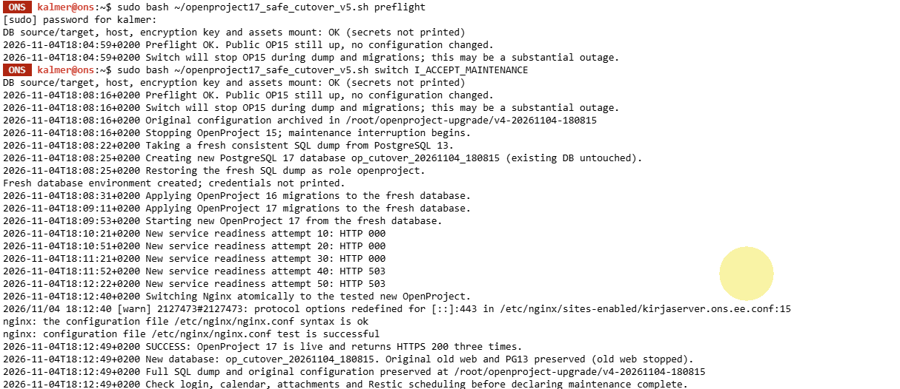
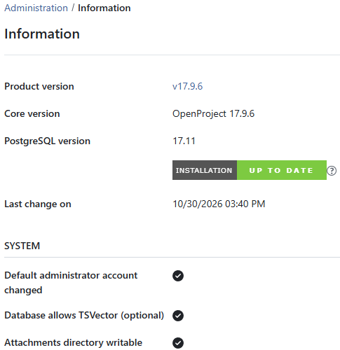

OpenProject 15 → 17: öine 502, õhtul kolm edukat HTTPS-kontrolli
Öine käsk sudo bash ~/openproject17_cutover_v3.sh switch lõppes veaga „Public Nginx returned HTTP 502 after switch”, väljumiskoodiga 1 ja tagasipööramise katsega. Ka järelkontroll näitas 502. Nginxi süntaks oli samal ajal korrektne: konfiguratsioonitesti läbimine ei kinnitanud rakenduse kättesaadavust.
Õhtuse õnnestunud katse algpilt näitab v5 skripti, kuigi taastamiskataloogi nimes on v4. Tegelikult tehtud sammud olid järgmised.
- Käivitatud eelduste kontroll:
sudo bash ~/openproject17_safe_cutover_v5.sh preflightLogi kinnitas andmebaasi lähte- ja sihtseaded, hosti, krüptovõtme ning manuste ühenduse; saladuste väärtusi ei väljastatud.
- Käivitatud hoolduskatkestusega üleminek:
sudo bash ~/openproject17_safe_cutover_v5.sh switch I_ACCEPT_MAINTENANCESkript peatas vana OpenProject 15, tegi PostgreSQL 13-st värske SQL-tõmmise, taastas selle uude PostgreSQL 17 andmebaasi, rakendas järjest OpenProject 16 ja 17 migratsioonid ning ootas uue teenuse valmimist. Alles seejärel lülitati Nginx uuele teenusele.
- Kontrolliti
nginx -ttulemust ja kolme avaliku HTTPS-päringu vastust. Kell 18.12.49 kinnitas logi kolm korda HTTP 200. - Avati Administration → Information. Kell 18.16 näitas haldusliides OpenProject 17.9.6, PostgreSQL 17.11 ning märget Attachments directory writable.
Algne veebikonteiner ja PostgreSQL 13 säilitati, vana veebiteenus peatati; SQL-tõmmis ja algne konfiguratsioon jäid taastamiseks alles. Need on selle serveri tegelikud käsud, mitte iseseisev migratsioonijuhend: v5 skripti terviklik sisu ja kõik konfiguratsioonimuudatused pole taastatud algallikast kinnitatud. HTTP 200 ja kirjutatav manusekataloog ei tõenda iga vana manuse avamist ega uut üleslaadimist. Kasutaja eraldi kinnitust manuste funktsionaalse testi kohta ei leitud.


Seis: uus versioon avalikult kättesaadav; kõik kasutusjuhtude kontrollid pole kinnitatud.